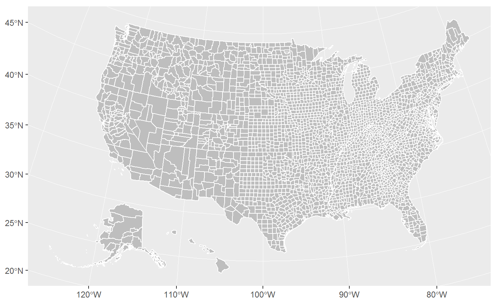
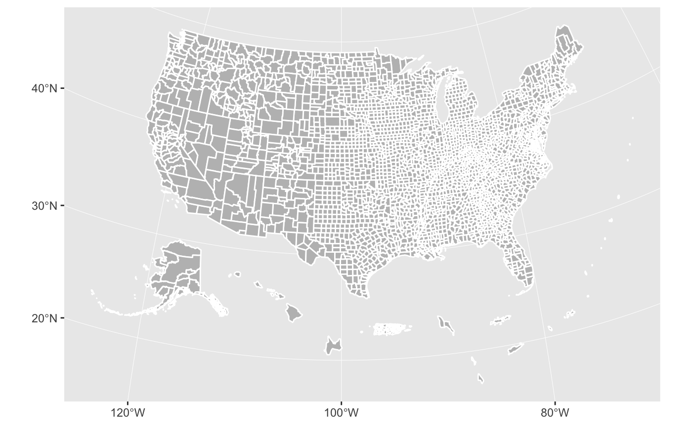
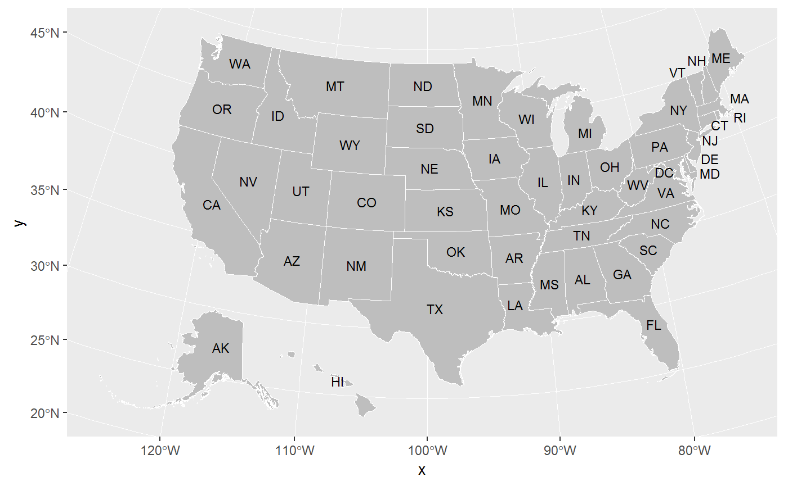
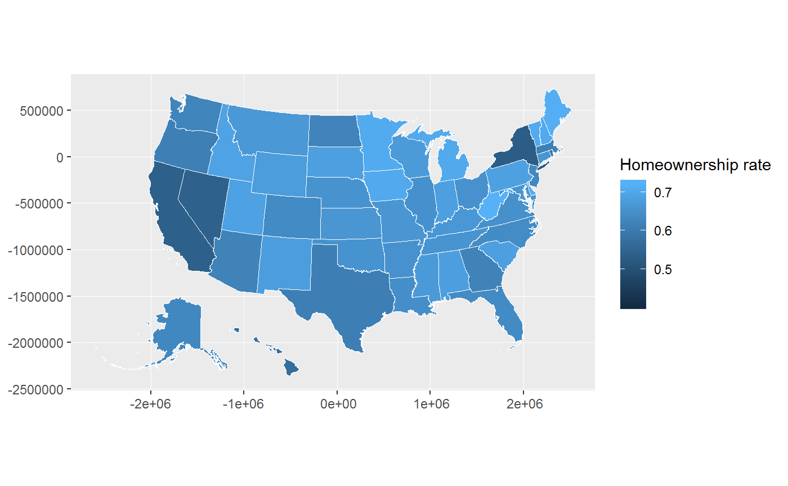
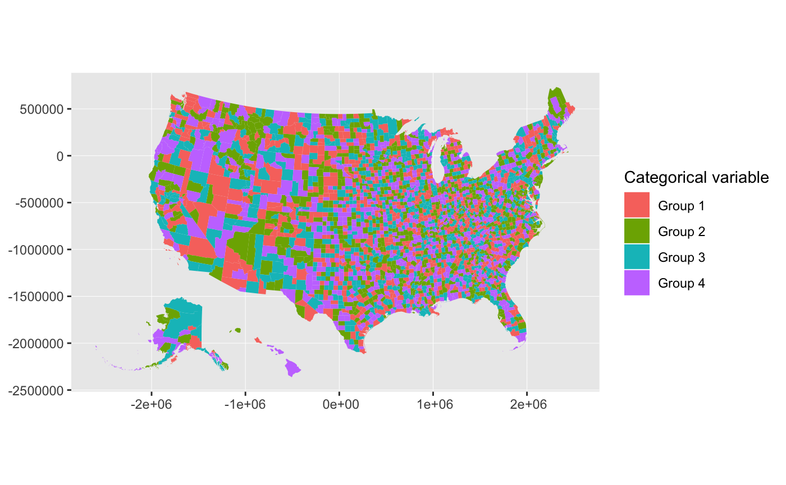
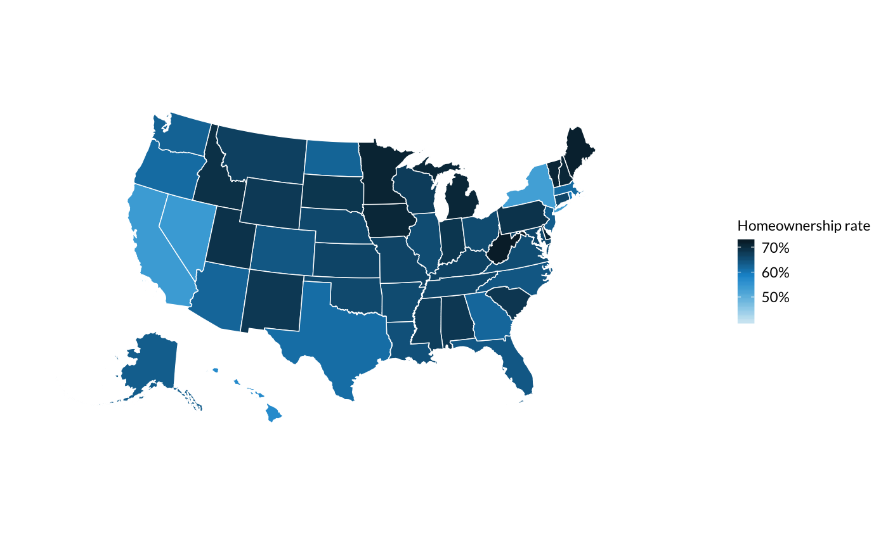
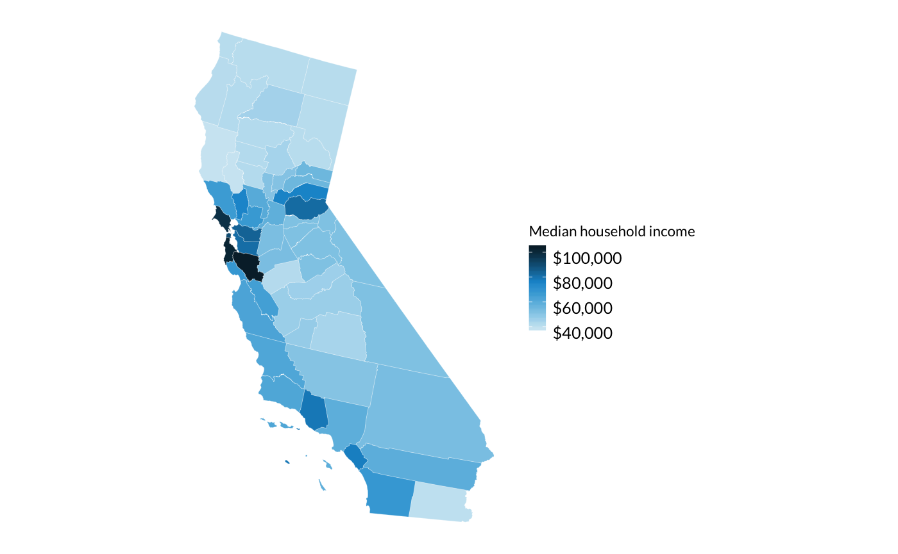

The urbnmapr package provides state and county shapefiles that are compatible to map with ggplot2.
Shapefiles include Alaska and Hawaii, transformed to be displayed as insets within the continental United States. There are options to include the territories for both the state and county maps.
This package is heavily inspired by and derived in part from the fiftystater package by William Murphy. In contrast, urbnmapr:
- Uses shapefiles from the US Census Bureau
- Converts the shapefile data to
sfformat - Adds various identifiers for merging
- Includes a county-level shapefile and options to add territories
Usage
Quick maps
The get_urbn_map() function can be used to call shapefiles. Using the sf = TRUE option will load sf objects. These can be used with geom_sf() to create base maps of the continental United States, with Alaska and Hawaii displayed as insets:
library(tidyverse)
library(urbnmapr)
states_sf <- get_urbn_map("states", sf = TRUE)
states_sf %>%
ggplot(aes()) +
geom_sf(fill = "grey", color = "#ffffff")
library(tidyverse)
library(urbnmapr)
counties_sf <- get_urbn_map("counties", sf = TRUE)
counties_sf %>%
ggplot(aes()) +
geom_sf(fill = "grey", color = "#ffffff")
The default projection is US National Atlas Equal Area.
More maps
Maps with US territories can also be called with get_urbn_map().
territories_counties <- get_urbn_map(map = "territories_counties", sf = TRUE)
ggplot() +
geom_sf(territories_counties,
mapping = aes(),
fill = "grey", color = "#ffffff")
Labels
Labels for states maps can be accessed with get_urbn_labels(). Only state labels are custom, so they can be displayed next to smaller states. Use the function to call the appropriate labels and then label the map with geom_sf_text().
states_sf <- get_urbn_map(map = "states", sf = TRUE)
states_sf %>%
ggplot() +
geom_sf(aes(),
fill = "grey", color = "#ffffff", size = 0.25) +
geom_sf_text(data = get_urbn_labels(map = "states", sf = TRUE),
aes(label = state_abbv),
size = 3)
Merging Data
The states and counties spatial data include various identifiers to simplify merging data. The states states tibble contains state_fips, state_abbv, and state_name. The counties tibble contains county_fips, state_abbv, state_fips, county_name, and state_name.
Continuous data can be mapping on a color scale.
spatial_data <- left_join(statedata,
get_urbn_map(map = "states", sf = TRUE),
by = "state_name")
ggplot() +
geom_sf(spatial_data,
mapping = aes(fill = horate),
color = "#ffffff", size = 0.25) +
labs(fill = "Homeownership rate")
Categorical data can be mapped on a discrete color scale.
counties_sf <- get_urbn_map(map = "counties", sf = TRUE)
county_groups <- countydata %>%
mutate(cat_var = paste0("Group ",
sample(1:4, nrow(countydata), replace = TRUE)))
household_data <- left_join(county_groups, counties_sf, by = "county_fips")
household_data %>%
ggplot() +
geom_sf(mapping = aes(fill = cat_var),
color = NA, size = 0.05) +
labs(fill = "Categorical variable")
Styles
library(urbnmapr) works well with the Urban Institute ggplot2 theme.
states_sf <- get_urbn_map(map = "states", sf = TRUE)
statedata %>%
left_join(states_sf, by = "state_name") %>%
ggplot() +
geom_sf(mapping = aes(fill = horate),
color = "#ffffff", size = 0.25) +
scale_fill_gradientn(labels = scales::percent) +
labs(fill = "Homeownership rate") +
coord_sf(datum = NA)
Map smaller geographies with filter(). You may need to reproject the data based on which areas you are mapping.
dmv <- household_data %>%
sf::st_as_sf() %>%
sf::st_transform(crs = 4326)
dmv %>%
filter(state_name %in% c("Virginia", "Maryland", "District of Columbia")) %>%
ggplot() +
geom_sf(mapping = aes(fill = medhhincome),
color = "#ffffff", size = 0.05) +
coord_sf(crs = 4326, datum = NA) +
scale_fill_gradientn(labels = scales::dollar) +
labs(fill = "Median household income")
A discrete color scale can also be used for categorical data.
state_categorical <- statedata %>%
mutate(cat_var = paste0("Group ",
sample(1:4, nrow(statedata), replace = TRUE))) %>%
left_join(get_urbn_map(map = "states", sf = TRUE), by = "state_name")
ggplot() +
geom_sf(state_categorical, mapping = aes(fill = cat_var),
color = "#ffffff") +
scale_fill_discrete() +
coord_sf(datum = NA) +
labs(fill = "Categorical variable")
Code of conduct
Please note that this project is released with a Contributor Code of Conduct. By participating in this project you agree to abide by its terms.